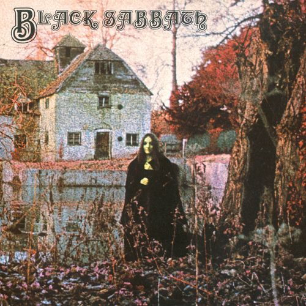

READY TO PLAY
01 / THE TURNTABLE33⅓ RPM

BLACKSABBATHBLACK SABBATH · 1970
SIDE A · TRACK 01
Black Sabbath
Black Sabbath · álbum homónimo
00:0000:00
◖72%
Añade las pistas MP3 en assets/audio.
03 / SELECT A TRACK
The record collection
BLACK SABBATH · DEBUT ALBUM1970 · 7 TRACKS